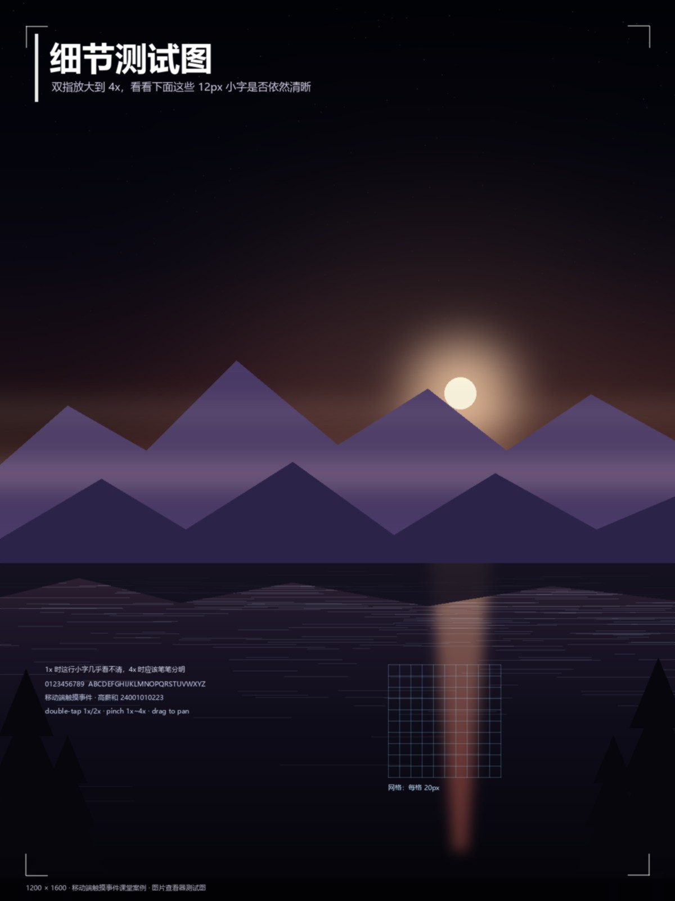

双指缩放 1x～4x · 双击 1x/2x · 放大后单指拖动 · 缩回 1x 自动居中

maxTx = max(0, (W·s − W)/2)，s=1 时恒为 0，拖不动。resize / orientationchange 后保留 scale，按新尺寸重算边界并夹取位移。核心只有一句：以两指中点作为不动点，而不是以图片中心。设上一帧的缩放为 s0、位移为 T0，两指中点在容器坐标系里的位置为 p0；本帧中点移到 p1、缩放变成 s1，那么本帧应有的位移是：
T1 = p1 − (s1 / s0) × (p0 − T0)
推导：图片上某点 u 的屏幕位置是 p = T + s·u，要让中点下的那个 u 在缩放前后保持不动，把 u 代回去即可。这样缩放 + 双指平移可以一起算，画面不会“跳一下”。
gxh_apply() 写回样式，不做多处零散修改。task3-demo.mp4 放进 assets/video/ 目录，刷新就会自动变成播放器；高薪和 · 24001010223 · 移动端触摸事件 · 任务三